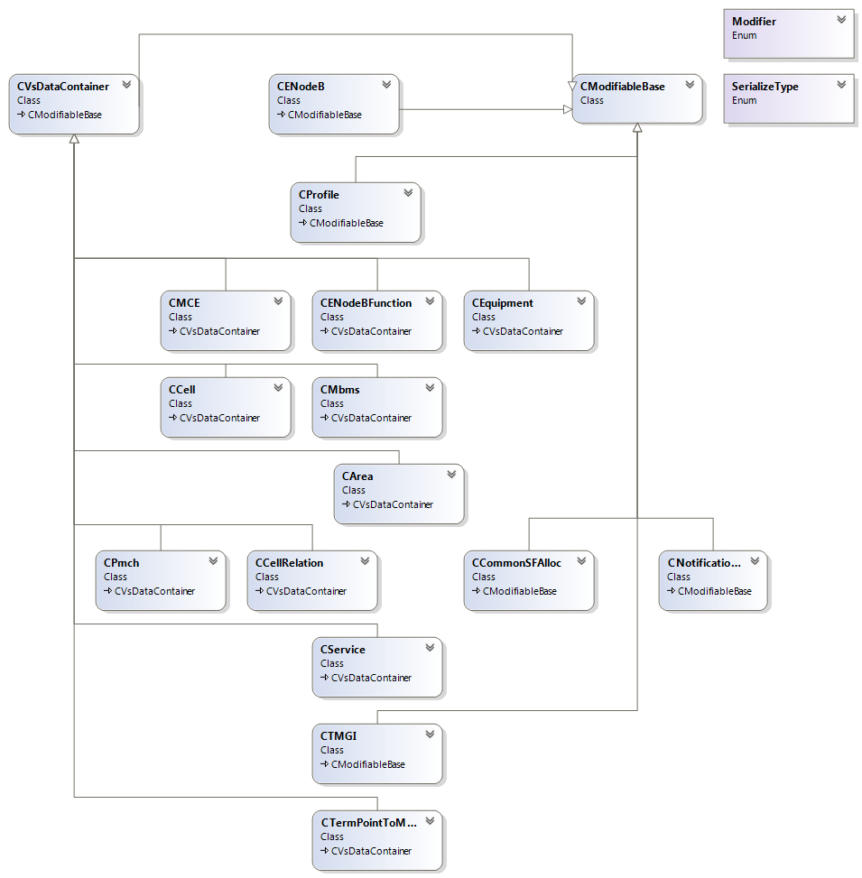
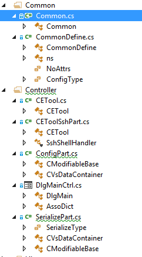
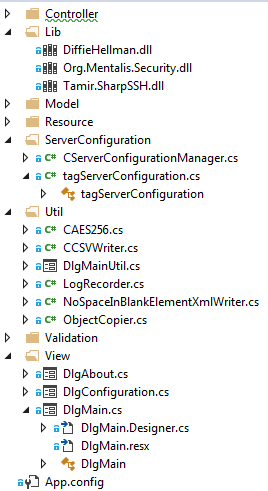
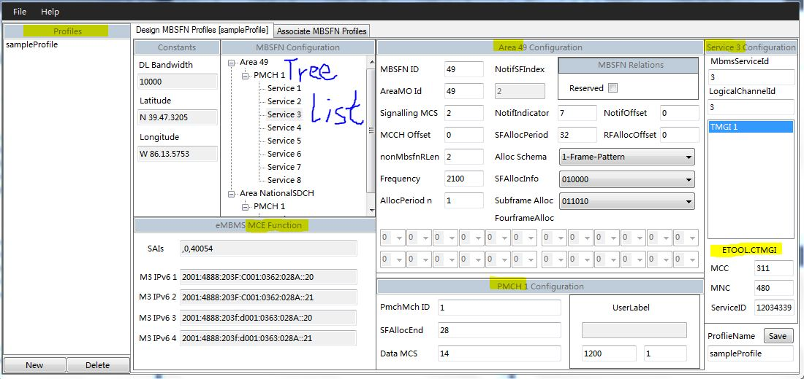
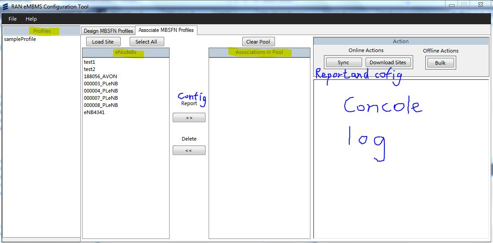
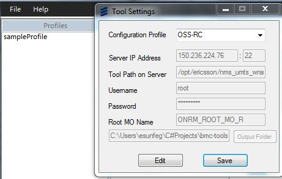

Author: Stupid Sun Eid: esunfeg
This doc describes how requirements of ETool ’s requirements are comprehended and implemented.
From 2015/8/3 to 2015/8/28, coded by Stupid Sun;
load sites and choose a csv file;>> button to add them into association pool;Report to get a report of the eNodeBs;Program will:
Upload report filter file;Execute report command; Download report result file;Read eNodeBs from report result file;Save their profiles into “eNodeBName.pfl“ to local machine;Config to config the eNodeBs with corresponding profiles;Program should:
Report first and get eNodeBsRead profiles from “profileName.pfl”;Apply profiles on corresponding eNodeBs to get modified data, let’s call it deltas.Save deltas to “Lock*.xml” and upload it and execute lock and active command;Save deltas to “Config*.xml” and upload it and execute config and active command;Save deltas to “Unlock*.xml” and upload it and execute unlock and active command;download sites to download eNodeBs from OSS server:Program should:
Upload eNodeB list filter fileExecute report commandDownload report result file;Read eNodeBs from report result fileAdd their ids to GUI and save them on disk;| xml files | <==> | data model | <=X=> | pfl files |
| xsd files | =auto=> | data model | <=auto=> | xml files |

Data models’ class diagram is shown above. Other structures can be seen from below pictures:
 
ETool.Sync:{
Report: {
uploadFilterFile,
cmdReport: {
excuteCmd: [
ConnectShell,
WriteLine(command),
SshShellExpect,
Regex.Match(result),
DisconnectShell
],
downloadErrorLogFile
},
downloadReportFile,
retrun: reportName
},
ParseReportFile(reportName): {
readENodeBs,
WriteProfile,
applyProfile,
return: configs
},
deleteNoDeltaENodeBs(configs),
Config(Lock): {
saveConfig(configs),
uploadConfigFile,
cmdConfig: {
excuteCmd,
downloadErrorLogFile
},
cmdActivate
},
Config(Config),
Config(Unlock)
}
CModifiable.Serialize: {
addHeadAttributes(),
addComponents: {
addnewXElement(_strComponents),
add_modComponents.Serialize()
}
},
CVsDataContainer.Serialize: {
CModifiable.Serialize(),
vsDataXElement(),
dataContainerAddElements: {
dataContainer.addComponents()
},
addConfigAttribute()
},
CAnyOtherModel.Serialize: {
Overrided or original workflow of above two base classes
}
CModifiable.DeSerialize: {
name=elementLabelName(element),
DeSerializeComponent(name): {
if(element.HasElements){
ctor=getDefaultCtorByClass(name),
mod=ctor.Invoke(...),
mod.DeSerialize(element),
addModifiable(mod)
}else{
addStrComp(element)
}
}
},
CVsDataContainer.DeSerialize: {
dataContainer.DeSerialize(element),
CModifiable.DeSerialize(element.Element(nameSpace+labelName));
},
CAnyOtherModel.DeSerialize: {
base.DeSerialize:{
//Overrided or original workflow of above two base classes
}
}
CModifiableBase.CModifiableBase[
newMod,
oldMod
]: {
componentKeys.forEach(key){
if(keyisstrKey){
strList=mod.strComp(key),
if(newStrList!=oldStrList){
strComp(newStrList)
}
}else{
modList=mod.modifiables(key),
if(modList.hasIdentity()){
updateAttributeModList(modList): {
if(newModList!=oldModList){
modifiables(newModList)
}
}
}else{
modDict=modList.toDictionary(),
updateModDict(modDict): {
modDict.forEach(mod){
ctor=getConfigCtorByClass(key),
if(newMod){
if(oldMod){
ctor=getUpdateCtorByClass(key),
mod=ctor.Invoke(update)
}else{
mod=ctor.Invoke(create)
}
}else{
mod=ctor.Invoke(delete)
},
addModifiable(mod)
}
}
}
}
}
},
CModifiableBase.CModifiableBase[
newMod,
modifier
]: {
this.modifier=modifier,
if(modifier==create){
_strComponents=copy(newMod._strComponents),
newMod.modifiableComponents.forEach(mod){
ctor=getConfigCtorByClass(mod.laberName),
mod=ctor.Invoke(create),
addModifiable(mod)
}
}
},
CAnyOtherModel.CAnyOtherModel:{
base.ctor:{
//Overrided or original workflow of above two base classes
}
}


